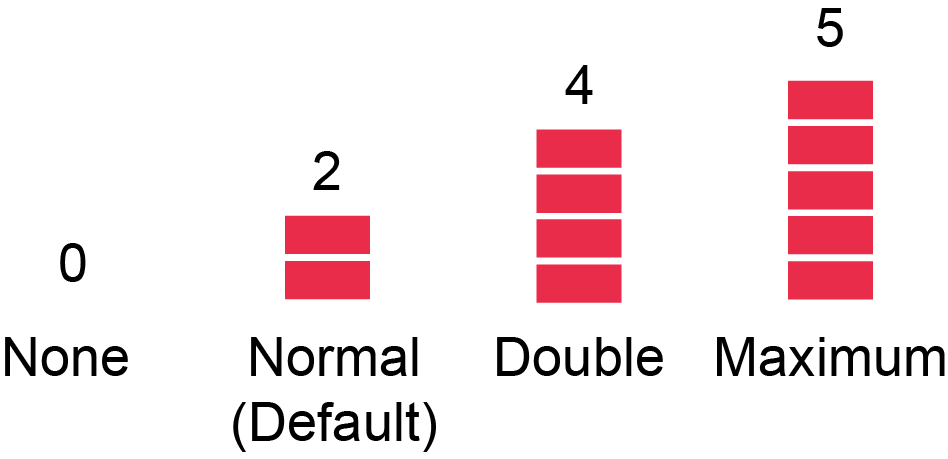
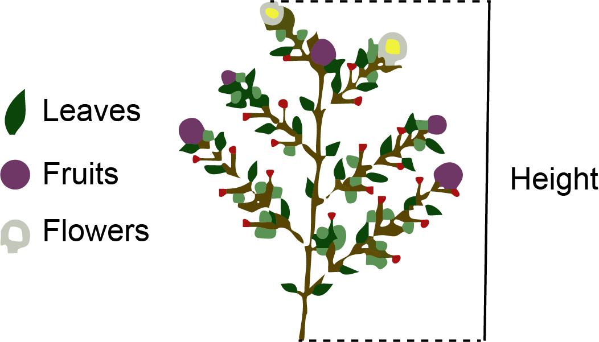

The Islands
The Island is a virtual environment where the original intention was for students to collect data for addressing questions in epidemiology. However, the Island has since been updated to include field stations that allow for plant growth. The plants can represent any plant, either an agriculturally significant plant, an indigenous significant plant, or a species of conservation concern. You decide on what plant it is and how it related to your topic.
Note, the plants grow in real time, and typically take 14 days to fully grow, depending on the local climate.
Access The Island from myMurdoch Learning.

There are three islands of focus (Fig. 1):
Ironbard: Ironbard is the most northern island and has a temperate climate (equivalent to Tasmania’s climate). The plant field station in Ironbard is called Hofn Field Station. The local weather station is called Abramsen Climate Station.
Providance: Providance is the island located on the east and has a semi-arid climate (equivalent to Perth’s climate). The plant field station in Providanceis called Biruwa Field Station. The local weather station is called Kennedy Climate Station.
Bonne Sante: Bonne Sante is the most southern island and has a subtropical climate (equivalent to Brisbane’s climate). The plant field station in Providanceis called Mutalau Field Station. The local weather station is called Nanu Forest Climate Station.
Altogether, there are three field stations from three islands with differing climates. Each station has 36 plots.
Design your project
You can manipulate Nitrogen (N) and Phosphorus (P) levels in the soil prior to growing the plants. The level of N and P are represented by blacks. Two blocks are the default, so we would consider them normal levels (Fig. 2), no blocks mean no N or P, four blocks means twice the concentration of normal levels, and five blocks is the maximum allowed (represents 2.5 times normal levels). Give the blocks some values. Use realistic values based on the literature and what is considered normal for the plant of interest.

Because there are three stations that span across different climates. You can compare the effect of temperature or rainfall on plant growth, fruit production etc. All stations provide the date, maximum temperature in degrees Celsius and rainfall in millimetres (Table 1). You can use this data to correlate with your dependent variables. You have the option to look at the interaction of N or P with temperature or rainfall (factorial design).
| Date | Max Temp (°C) | Rainfall (mm) |
|---|---|---|
| 01/064 | 18.8 | 1.0 |
| 02/064 | 23.7 | 0.8 |
| 03/064 | 25.3 | 0.8 |
| 04/064 | 29.3 | 0.0 |
| 05/064 | 29.7 | 14.1 |
For the 36 plots per site, it means you can have 18 replicate plots/treatment if you have two treatments, 12 replicate plots/treatment if you have three treatments, 9 replicate plots/treatment if you have four treatments, and 6 replicate plots/treatment if you have five treatments. Balance between number of treatments and number of replicates.
What you can measure?
Your plant will look like this (Fig. 3). The green parts represent leaves, the purple circles represent fruits, and the white circles represent flowers. You can measure the following as response dependent variables:

Height: You can use a ruler to measure on your screen.
Growth rate: If you measure height over time, you can calculate growth rate. Note, make sure your screen is the same size to ensure consistency in your measurements over time.
Number of leaves: Count the number of green parts.
Number of fruits: Count the number of purple circles.
Number of flowers: Count the number of white spots.
Branches: Count the number of diverging branches from the main stem.
Yield: Once harvested, you will get a number in the “Harvest” tab (Table 2). The data table will include Date of harvest, the row and column of the plot, and the yield or biomass (g). Once harvested, the plant doesn’t grow again (ONE time, destructive). So, be careful on when you plan to harvest the plant.
| Date | Row | Column | Yield |
|---|---|---|---|
| 01/064 | 1 | 1 | 320 |
| 02/064 | 1 | 2 | 269 |
| 03/064 | 1 | 3 | 327 |
| 04/064 | 1 | 4 | 390 |
| 05/064 | 1 | 5 | 307 |
I have no idea what the red circles are. You can count them and assign a name to them if you like (e.g. berries, fungal pathogen).